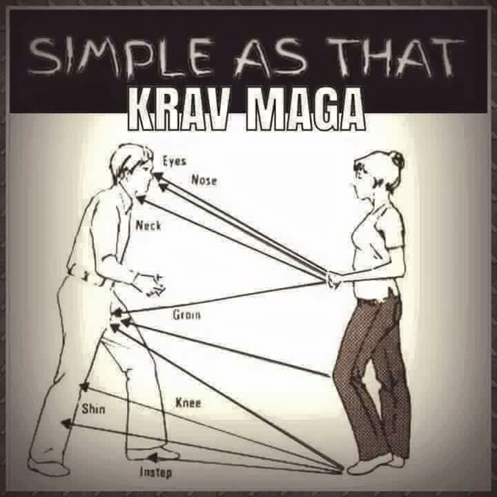

Krav Maga
tags: grappling, punches, kicks, elbows, knees, throws, defensive, offensive, weapon-defense, knife defense, gun defense, military
Krava Maga was created around the mid 1950's and was originally made for the Israel Defense Force and Israeli security forces. It consists of a combination of techniques sourced from Boxing, Wrestling, Muay Thai, Jujutsu, Aikido, Judo, along with realistic fight training. While made for the military is has gained popularity for other militaries, law enforcement, and everyday people.
This system is known for being focused on real world fights and situations and its extreme efficiency with brutal counterattacks. Its philosophy is aggression and simultaneous defensive and offensive maneuvers. It emphasizes teaching simple, practical, and effective techniques and being able to teach them quickly.
As Krava Maga is geared more toward self-defense rather than sport it teaches to avoid a confrontation when you can, but if it is unavoidable then you hit first and finish the fight as efficiently and quickly as you can. You are taught to use all weapons available (even ordinary items like keys) and aim for the weak spots of the body such as the eyes and groin.
Krava Maga also trains in scenarios that you might encounter in real life such as a mugging and home invasion. You are taught situation awareness and when you are in a fight to always be expecting another enemy and a weapon.
Krava Maga teaches weapon defense against several weapons including guns, knives and sticks. It also teaches fighting multiple opponents and fighting from the ground.

Back to Top